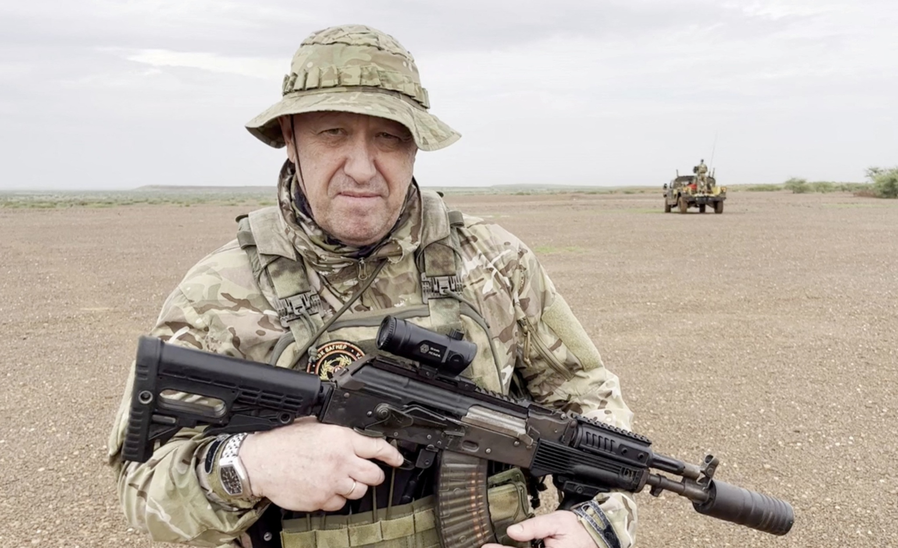

Ultimas notícias Rússia
Putin elogia Prigozhin e expressa “sinceras condolências” por mortos em queda de avião
O presidente da Rússia, Vladimir Putin, expressou suas “sinceras condolências” a família de Yevgeny Prigozhin, chefe do Grupo Wagner, e dos outros passageiros que estavam a bordo do avião que caiu na quarta-feira (23). Em um discurso transmitido na televisão, nesta quinta-feira (24), Putin chamou o líder do grupo mercenário de “empresário talentoso”, e disse que é preciso aguardar o resultado da investigação oficial sobre o acidente, acrescentando que isso deve levar algum tempo. “Se os funcionários do Grupo Wagner estavam lá, e os dados preliminares indicam que sim, gostaria de observar que essas pessoas deram uma contribuição significativa para a nossa causa comum de combate ao regime neonazista na Ucrânia, lembramos disso, sabemos disso e não esqueceremos”, acrescentou Putin.